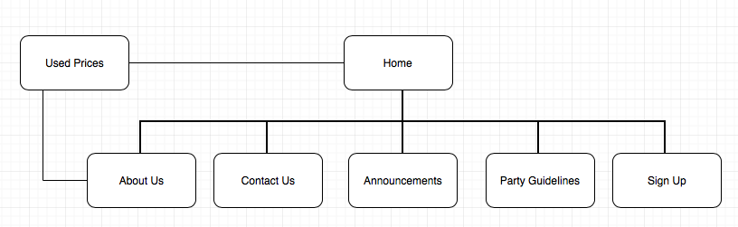

Name: Myles Taguiam
ID no : 13235608
Concisely state what the goal (purpose) of the website is. Note that the mission must be to improve something in a measurable way. To "provide information about something" is not a good mission, since you can't see a measurable improvement. Why is the site needed? How does it benefit the client? Be clear and specific. Good mission statements are usually only a few sentences and contain no unnecessary information.
Goal: CossiePlay is currently trying to get more people into cosplaying, especially with the younger generation, which includes both high school kids and young adults. With a current demography of people aged 35-50, there is a small number of people from the young generation. The creation of the website, COSSIEPLAY.AU, is meant fill that gap. It is also meant to get more people to attend costume parties or cosplay conventions with costumes made by CossiePlay, as well as, join in costume parties hosted by CossiePlay every month.
Mission: Our mission is to provide you with the best quality costumes for Cosplaying in Australia at an affordable price. We allow you to enjoy costume parties enjoy your life in a fun, awkward and creative way every month. We srtive to create you with new costumes as fast as possible so that you may show off their true self in a fun and exciting way.
Describe the process(es) by which the site's success will be evaluated. Note that "hits" only counts people (or robots) visiting your website, which says nothing about whether the site has achieved its mission. How do you know that the site does what the client wanted? Measure the mission you stated above.
Evaluation: The website has the potential to become successful with its visitors as it is well organized, and navigating between pages is made easily visibile. In addition, the creation of the website itself allows the younger generation, to whom are the experts in technology in today's digital age, get to know more about Cosplay and get started in creating costomes of their favorite character. It also allows them to easily know what's happening around the area, letting them to get in touch with the shop and easily sign up for events hosted by CossiePlay.
Describe two things clearly and specifically:
1. the target audience that your site is intended for (be specific; you can't aim for everyone)
2. how you will intentionally design the site to cater to this group (as distinct from another, different target audience).
Target Specs:
1. Fun layout, meant to fit in with the fun elements of Cosplay, allowing visitors to "get in the mood" of cosplay.
2. Easy navigation with links to other pages easily visible and clickable in both the eader and footer.
Create a site flowchart to show the hierarchy of pages in the site and their relationships. Each page should be represented by one box. The order of boxes is the order these links should appear on the site. If you don't have a preferred drawing program for flowcharts, use www.draw.io. Save your flowchart as a PNG file (normally the best file format for plain, straight-lined diagrams like this) and insert the image in your plan file under this heading.
